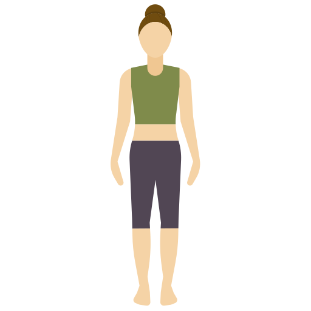

<div class="container">
    <button mat-fab color="warn" aria-label="Example icon button with a home icon" class="button" routerLink="/menu">
        <mat-icon>home</mat-icon>
    </button>
    <mat-progress-spinner class="progress"
        color="accent"
        mode="determinate"
        value="64">
    </mat-progress-spinner>

    

    <div class="left">
        <canvas class= "canvas" #canvasEl id="mycanvas" width=640 height=480></canvas> 
        <video autoplay playsinline muted class="webcam" width="640" height="480" #video></video> 
    </div>
    <div class="right">
        <p class="tittle">La montaña</p>
        
    </div>
   
</div>

<!--

-->